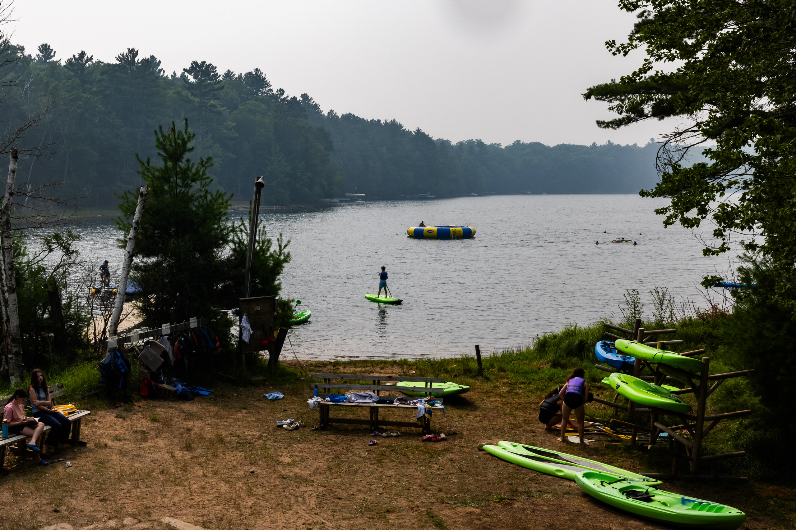

The sampler
Five ways to put photographs in front of people, each on Interlaken frames. Walk it on the phone. What earns its keep becomes house standard; what does not, dies here.
The wall
A print at true scale over an 84-inch sofa. Tap a size. This is the print store's closer: not "buy a print," but "this is your wall."

Scale is honest: the sofa is 84 inches; the frame resizes true to it.
The book The Bader-book preview shape
Drag a page corner, or tap the page edges. Layouts delivered like this get approved in a day; nobody has to imagine what the book will feel like.
Demo pages, one frame each; a real layout carries spreads, pairings, and the narrative order.
Deep zoom
Pinch and wander inside the waterfront panorama. The point makes itself: the file holds up, and the big print will too.
Justified rows
Every frame uncropped, full width, and the order is YOUR order. The current masonry columns silently shuffle the sequence; this layout keeps the narrative.
 2
2 3
3 9
9 11
11 14
14 23
23 33
33 38
38 42
42 48
48 63
63 68
68 71
71 74
74 83
83 93
93 97
97 112
112 144
144 161
161The voice on the frame
Tap play, hear the photographer for twenty seconds. Nothing else delivers this. The transcript below is your own ledger note for this frame; the audio is one phone recording away.

“Part of a number of images that for me are a statement that marketing images don't have to be perfect days, because not every day is a perfect day. I'm showing camp on imperfect days. I'm showing beautiful spaces on imperfect days, and I think that can be important.”
Voice note lands here; this is the shape
Then and now
Drag the handle. In the real version the left side is the camp's archival photo of the same spot; here it is a stand-in (your frame, aged in CSS) so the interaction can be felt. This is "the bridge is still the same" as a thing alumni do with a thumb.